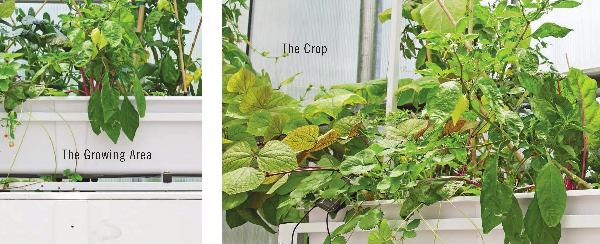

The Lights Hydroponics is a popular growing technique indoors because it is clean and very productive. When gardeners decide to grow indoors they often want to maximize the yield in their limited growing area, and this goal is generally accomplished with hydroponic growing techniques. The primary equipment required to grow indoors is a grow light. There are many options for indoor lighting and each option has its advantages. Depending on light intensity, duration, and color, a grow light can stimulate a wide range of desirable plant traits, including enhanced flavor, increased nutrient content, increased plant pigmentation, reduced or increased plant height, earlier or delayed flowering, and increased yield. Nearly all the systems in this book can be used indoors when paired with an appropriate grow light. The Growing Medium Soil gardening and soilless hydroponic gardening are not enemies; each has its strengths and weaknesses. Blindly stating that one is better than the other may be tempting for those deeply invested in one method or the other, but doing so ignores the fact that both of these methods are very diverse. The fertilizers used for hydroponics are usually very different from those used by soil gardeners. Hydroponic fertilizers need to provide everything required for healthy plant growth, whereas fertilizers intended for use in soil will just focus on a few of the major nutrients because it is assumed most of the other nutrients will already be present in the soil. Hydroponic fertilizers will work in soil, but fertilizers intended for use in soil will rarely work in hydroponic gardens. Not only would the fertilizer intended INTRODUCTION 15
